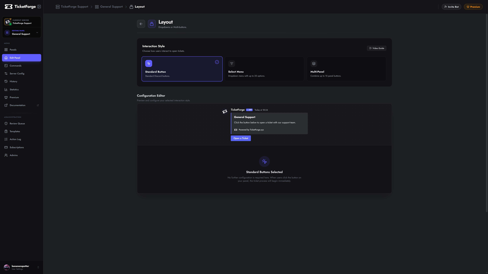
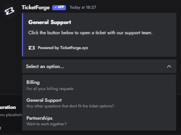
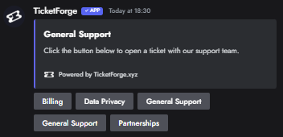

Interaction Styles (Layout)
TicketForge offers three distinct interaction styles for your panels, allowing you to optimize for space or visual appeal.

Video Tutorial
Watch our video guide below to learn step-by-step how to set up both multi-panel buttons and select style (dropdown) layouts:
(If the embedded video above doesn't load, you can also watch the tutorial on YouTube.)
1. Single Button
The standard panel with a single button. This is the default style and is best for simple, straightforward setups where users only need one option to click.
2. Select Menu (Dropdown)
Best for panels with many categories (e.g., "Tech Support", "Billing", "Report Player", "Bug Report").
- Capacity: Up to 25 options in a single menu.
- Descriptions: Each option can have a secondary text line for context.
- Emojis: Supported for every option.
- Logic: Each option in the dropdown triggers a different panel configuration behind the scenes.

3. Multi-Panel
A powerful layout that combines buttons from multiple different panels into a single message. Best for panels with 2-5 options.
- How it works: You create a "Master Panel" and attach other panels to it.
- Visual: The bot displays the buttons from all attached panels in a grid under one embed.
- Benefit: Allows you to have a "General Support" button and an "Apply for Staff" button in the same message, even though they have completely different logic/roles behind them.

Configurable Buttons
In Panel Editor > Buttons, you can customize the following system buttons for any of your panels:
| Button | Default Label | Function |
|---|---|---|
| Create Ticket | Open Ticket |
Opens a new ticket for the user. |
| Close Ticket | Close |
Archives the ticket (or triggers confirmation). |
| Claim Ticket | Claim |
Assigns the ticket to the clicker. |
| Transcript | Transcript |
Generates a log file of the chat. |
| Delete | Delete |
Permanently deletes the channel. |
| Re-Open | Re-Open |
Moves a closed ticket back to the open category. |
| Confirm Close | Confirm |
The "Yes" button in the close confirmation prompt. |
| Cancel Close | Cancel |
The "No" button in the close confirmation prompt. |
- Customization: You can change the Label and Color (Blurple, Grey, Green, Red), and Role Requirements for each button.